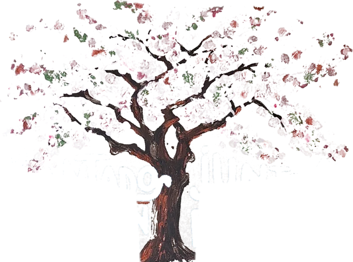
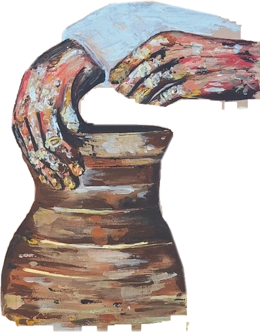
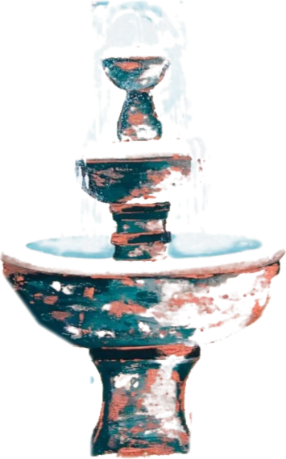
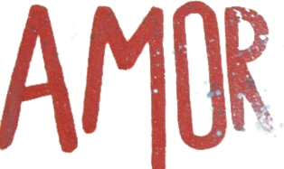
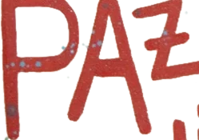
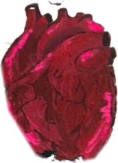
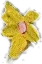
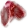
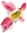
Galería
Obras
Las podemos volver a pintar para vos. Tamaño y precio, lo hablamos por WhatsApp.
Por encargo
¿No encontrás la que buscás? La pintamos para vos.
- 1Tu ideaUn versículo, una historia.
- 2Boceto y señaTe mostramos cómo se vería.
- 3Pintura y entregaLa pintamos a mano.
Contanos tu idea
Soy barro en manos del alfareroJeremías 18
Taller
Taller de arte
Dibujo, pintura, escultura y animación en un mismo taller. Los materiales están incluidos.
- Dibujo
- Pintura
- Escultura
- Animación
Mes de la inauguración: te regalamos un bastidor.
- Días
- Lunes y jueves
- Turno mañana
- 10 a 11:30
- Turno tarde
- 18 a 19:30
- Materiales
- Incluidos
- Dónde
- Presencial · calle Paraguay
Cupos y precio: consultalos por WhatsApp.
Consultar por el taller
Foto pendiente · una clase
El amor es paciente, es bondadoso1 Corintios 13
Mejor foto de la muestra
La muestra
Nombre de la muestra
Lugar pendienteFecha pendiente
El porqué
Por qué lo hicimos
Texto en primera persona sobre por qué se hizo la muestra y qué querían mostrar. Lo cuenta el cliente
Una línea sobre lo que pasó ese día y lo que significó. Ejemplo
Foto del montaje
Foto de la gente
Video
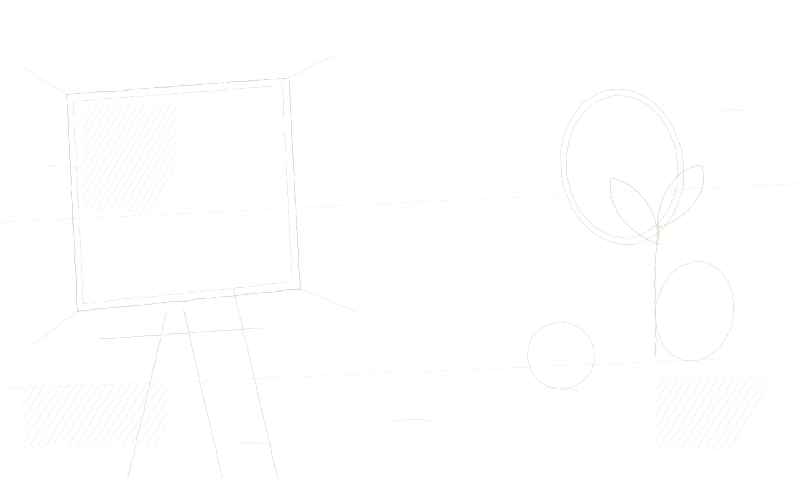
Tienda
Algo se está pintando
Estamos preparando algo para llevarte a casa.
PróximamentePróximamentePróximamentePróximamentePróximamentePróximamentePróximamentePróximamente
PróximamentePróximamentePróximamentePróximamentePróximamentePróximamentePróximamentePróximamente
Foto de Abigail y Matías
El lemaFe en obra
Sobre Vástago
El brote que nace de una raíz
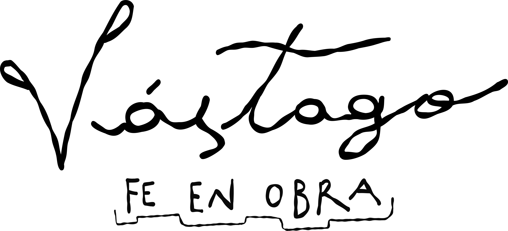
Abigail y Matías
Un texto corto, escrito por ellos, en primera persona.
Y Juana, que nos acompaña.
Tu fe también puede ser una obra
Él lo habita con nosotrosSadrac, Mesac y Abednego